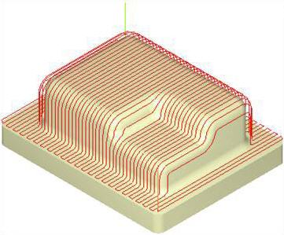
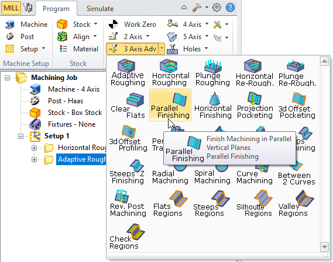
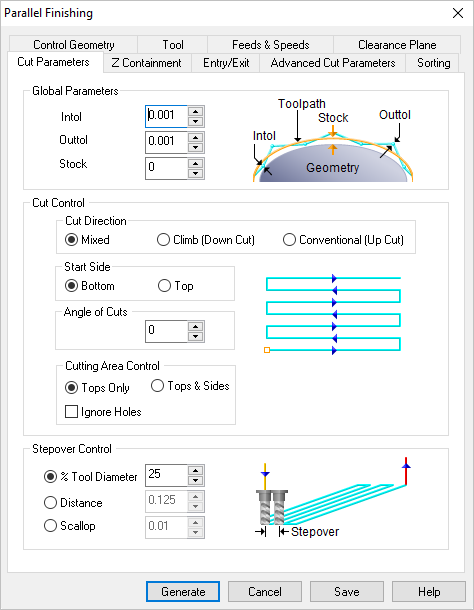

Available in: |
Xpress |
Standard |
Expert |
Professional |
Premium |

Parallel Finishing, 3 Axis
Parallel Finishing is a toolpath method, which can be used either as a pre-finishing operation or as a finishing operation. In this cut method, the cutter is restricted to follow the contours of a part in the Z direction while being locked to a series of parallel vertical planes.
The orientations of these vertical planes about the XY plane are constant and can be defined by an angle about the X axis. As the cutter follows these vertical planes, it can either form a Zig or ZigZag cut pattern. In the Zig cut pattern, the cutter always goes in a constant direction while in the ZigZag cut pattern, the cutting direction alternates between two successive parallel planes. This is one of the most commonly used cut methods for pre-finishing and finishing parts. The tools typically employed in this operation are ball end mills.
See also: What Tool Types are Supported by this Operation?
|
 Parallel Finishing, 3 Axis Examples |
The Parallel Finishing toolpath method is invoked by selecting the Program tab, clicking on the 3 Axis or 3 Axis Adv button in the Machining Browser and selecting the Parallel Finishing Operation.
 Parallel Finishing, 3 Axis Menu Item |
The dialog that is invoked when you choose this toolpath method is shown below:  Dialog Box: Parallel Finishing, 3 Axis |